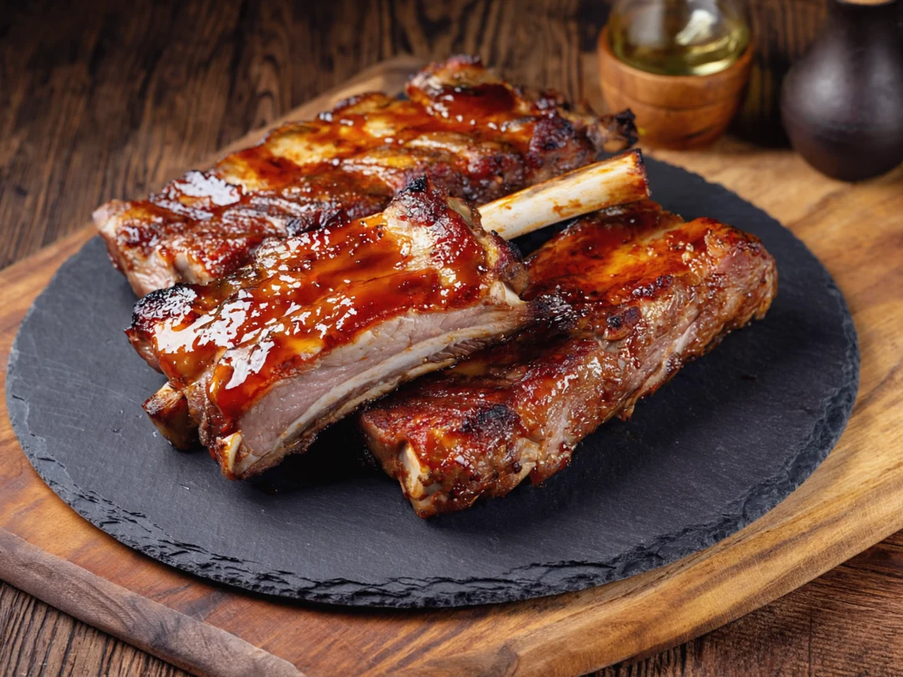

ちゃんと「いただく」方法
スペアリブのたれは、ここで塗る
骨まわりまで火を通して、たれは仕上げに薄く塗ります。
ふた付きグリルの炭と肉を少し離して火を入れます。中心の加熱を温度計で確認したあと、表面を仕上げます。生肉に触れたたれやトングは食べる段階で使い回しません。炭火は屋外で。

材料
豚スペアリブ 500g、塩 3g、しょうゆ・はちみつ 各大さじ1、米酢 小さじ1。2〜3人分。
作り方
- 肉の表面の水気をふき、塩を振る。たれは別の容器で混ぜる。
- 屋外のふた付きグリルで、炭の真上を避けてじっくり火を入れる。骨を避けた最も厚い肉で加熱を確かめる。
- 仕上げに新しい刷毛でたれを薄く塗り、炭に近い側で焼き色をつける。焦げそうなら炭から離す。
時間は目安です。火の通りは温度計で確かめ、肉の厚みや火力に合わせて調節します。中心部が75℃に達してから1分間以上加熱します。